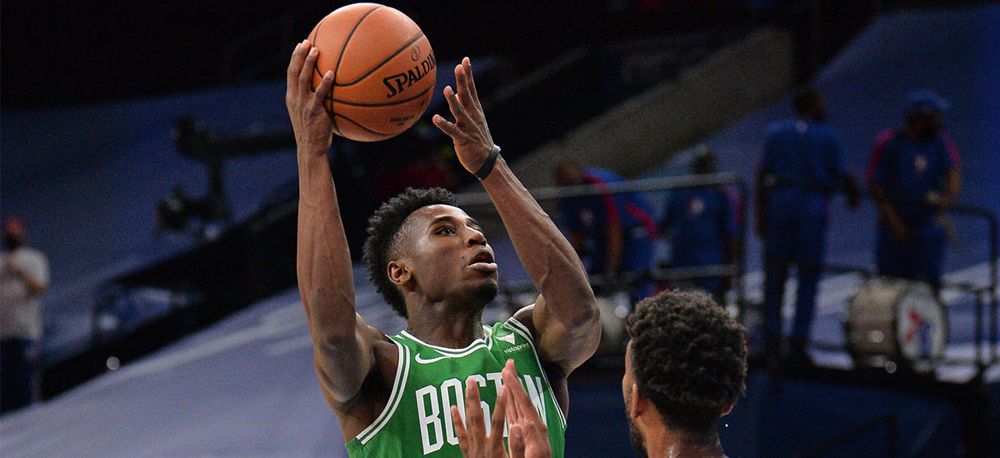

The Boston Celtics enter the 2020-21 season with a combination of lofty goals and realistic perspectives. Their goal, as always, is to add an 18th championship banner to the TD Garden rafters. They recognize, however, that their current state is far from
championship caliber. “We have a lot of growth that has to occur on this team for this team to be good,” Brad Stevens said Tuesday afternoon. Read more here!
22 December , 2020
Tremont Waters Hopes of Strong Preseason
Tremont Waters is the smallest player on the Celtics’ roster, yet he still managed to make one of the biggest impressions on Boston’s coaching staff during preseason play. Head coach Brad Stevens singled out the 5-foot-10 point guard as one of the team’s
few consistent bright spots throughout its two preseason losses, particularly for his effort during the fourth quarter of Friday night’s 113-89 loss to the Brooklyn Nets. Read more here!
21 December, 2020
Keys to the game
It took one game to notice the impact – or lack thereof – of no crowd being inside TD Garden. The Boston Celtics began staging a massive comeback during the early moments of Friday’s third quarter against the Brooklyn Nets. Had a Celtics crowd been on
hand, Boston may have completed the comeback. Instead, the Nets were able to erase their host’s momentum..Read more here!
18 December, 2020
2020-21 Roster Breakdown
Now that the Boston Celtics have officially begun the preseason, it’s time that we break down the roster and provide an idea of what the team’s depth chart will look like heading into the 2020-21 campaign.Read more
here!
16 December, 2020
‘I'd Been Looking Forward to It’

BOSTON – Celtics rookie marksman Aaron Nesmith on Tuesday night played in his first competitive basketball game in 342 days. It took him all of 45 seconds to shake off any shooting cobwebs that may have accumulated. Nesmith, who hadn’t played since Jan.
8 when he was a sophomore at Vanderbilt University, entered Boston’s preseason opener in Philadelphia at the 7:07 mark of the third quarter. On just his second career offensive possession, the 21-year-old caught a pass in the
left corner, took one dribble toward the wing, and knocked down step-back triple over the outstretched hand of All-Defensive First Team guard Ben Simmons. Read more
here!
16 December, 2020
Pritchard Dazzles in Pro Debut
Payton Pritchard sure looked like he belonged during his NBA debut. The rookie point guard came off of Boston’s bench Tuesday night and dazzled during his first preseason game, logging 16 points, four rebounds, two assists and a blocked shot against the
Philadelphia 76ers. He finished second among all Celtics reserves in playing time with nearly 22 minutes of action, which trailed only Grant Williams.Read more
here!